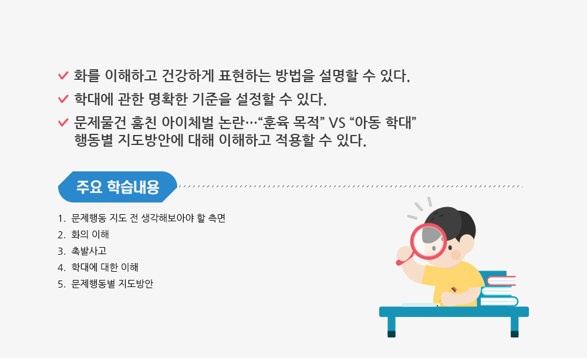

1 10
문제행동별지도방안
강사 : 김경미
들어가기>사전학습
사랑의 매는 존재할까?
사랑의 매에 대한 자신의 생각이나 경험을 아래에 입력해봅시다.
A
사랑의 매는 존재할까?
사랑의 매에 대한 자신의 생각이나 경험을 아래에 입력해봅시다.
들어가기>학습목표
정리하기>퀴즈
Q1다음 중 화에 대한 설명으로 바르지 않은 것은?
정답 : ①
화의 분출로 인한 해소는 일시적일이다. 분노에 관계되는 변연계가 자주 활성화되면 이를 조절하는
전전두엽의 기능이 노화되어 제 역할을 못하게 되고 결국 작은 자극에도 폭발하게 된다.
Q2체벌과 학대에 대한 설명으로 바르지 않은 것은?
정답 : ③
대부분의 학대가 체벌에서 시작될 수 있기 때문에
훈육이라는 미명하에 행해지는 체벌도 금지되어야 할 것이다.
Q3화를 잘 표현하는 방법으로 옳지 않은 것은?
정답 : ②
부끄러움을 많이 타고 내성적인 아이를 위한 지도방안으로는
용기를 잃지 않도록 격려해 주는 것이 적합하다.
정리하기>학습정리

정리하기>보충학습
학습 후 보충 심화 학습자료를 확인해보세요.
아동학대 예방의 길
매년 11월 19일은 아동학대예방의 날로 ‘아동의 건강한 성장을 도모하고 범국민적으로 아동학대 예방과 방지에 관한 관심을 높이기 위해’ 아동복지법에 의해 지정된 날이다.
더불어 아동학대예방의 날부터 1주일을 아동학대예방주간으로 하며 국가와 지방자치단체는 아동학대예방의 날의 취지에 맞는 행사와 홍보를 실시하도록 노력하고 있다.
이와 같은 국가적 차원 노력과 더불어 2014년 9월, ‘아동학대 범죄의 처벌 등에 관한 특례법’이 시행되면서 국민들의 아동학대에 대한 인식이 변화되고 신고건수가 증가하고있는 일은 분명 고무적이다.
아동보호전문기관에서 일하는 필자 또한 점차 아동학대 신고 수가 늘고, 신고자가 신고의무자에 국한되지 않고 다양화 되고 있음을 최근 기관에 접수되는 신고들을 통해서 확인하고 있다.
사실 학대 행위를 눈앞에서 보았다 하더라도 신고하기가 생각처럼 쉽지만은 않다.
신고를 하는 자신이 노출될 염려와 더불어 아동이 속한 가정에 상처를 주는 것은 아닌지 걱정이 되기 때문이다.
실제로 기관에서 신고를 접수받을 때 이 같은 이유로 한참을 상담 받는 사람도 적지 않다.
이렇게 많은 망설임과 고민을 거쳐 접수된 귀중한 신고들은 우리가 그냥 지나칠 수 있었던 아동의 아픔을 발견하고 도울 수 있는 귀중한 씨앗이 된다.
아동은 키우는 보호자뿐만 아니라 아동이 속한 사회 모두의 도움이 필요한 일인 것이다.
하지만 관심과 신고를 통해서 아동학대 발견이 늘어나도 제대로 된 인프라 구축과 서비스 지원이 이루어지지 못하면 재학대가 발생하고 아동은 학대를 극복할 수 없다.
아동학대 근절을 위해서는 학대행위의 발견과 처벌에 머물지 않고 예방과 재학대 방지 시스템 구축을 궁극의 목표로 삼아야 한다.
재학대 방지의 중요성은 수치를 통해서도 드러나고 있는데 재학대 신고건수가 2012년 914건에서 2016년 1664건으로 약 2배가량 증가하였고, 부모에 의한 재학대 비율이 2016년 기준 94.5%(1664건 중 1572건)로 집계되었을 정도로 심각한 수준이다.
아동학대 신고가 폭발적으로 급증한 현재, 아동보호전문기관은 새로 신고 된 사건을 조사하는 것만으로도 벅찬 실정이다.
현재 1개 기관이 4~5개 지자체의 아동학대 문제를 떠맡고 있는데 이는 각 지방자치단체는 시군구별로 지역아동보호전문기관을 1개 이상 설치해야 한다는 아동복지법과도 맞지 않다.
정부는 아동학대 신고와 조기발견에만 집중되는 대책으로 끝나는 것이 아니라, 학대피해 아동들과 가족의 관리 및 지원으로 재학대가 일어나지 않도록 실질적인 보완책을 마련해야 할 것이며 학대피해 아동과 가족에 대한 상담·교육 등이 제공될 수 있도록 전담하는 서비스 지원 시스템을 재정비할 필요가 있다.
[출처] http://www.kyongbuk.co.kr/?mod=news&act=articleView&idxno=1045146
권정은 경북동부아동보호전문기관 관장 등록일 2018년11월22일 18시08분
문제행동별 지도방안
부모와의상담
교수소개
김경미 교수님
- 경력 및 학력
- 현) 고려대학교 보육학개론 교수
- 전) 고려대학교 가정교육 교수
- 전) 성균관대학교 대학원
아동문제와 보호 강의아교수법 교수 - 고려대학교 대학원 가정학과 아동학 전공
박사졸업